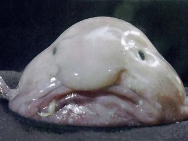

The word "glob", often used interchangably with "glob" is
an approximation of viscosity.
Viscousness
is a measure of how well a solution holds itself together.
Water is not at all viscous, or at least it shouldn't be.
It's very runny.
Aloe juice is very viscous. It's thick. Peanut butter is
very viscous and is
another food that can be said to be "gloppy".

This tool is most often called a spatula, which can be confusing since there are other kitchen tools for different uses that are also called spatulas. The flipping spatula, also called a turning spatula or a turner, is made for turning food over in the skillet. Gramma called it an egg-turner.
If you cook ahead, in batches, you can freeze serving size portions. Then you can reheat them when you want, quickly, with the same level of convenience you get from fast food, but without commercial additives.
Do you have the tools to cook from scratch?
Getting set up to cook from scratch can seem expensive, but basic ingredients go a long way. After the initial investment, you should see a significant drop in food costs.
Another thing to take into consideration is if you enjoy cooking or not. Some people simply don’t enjoy it, but it can be a delicious creative outlet for others.
Shop around. Find Farmer’s Markets. Watch what goes on sale and look for meals that can be made from it.